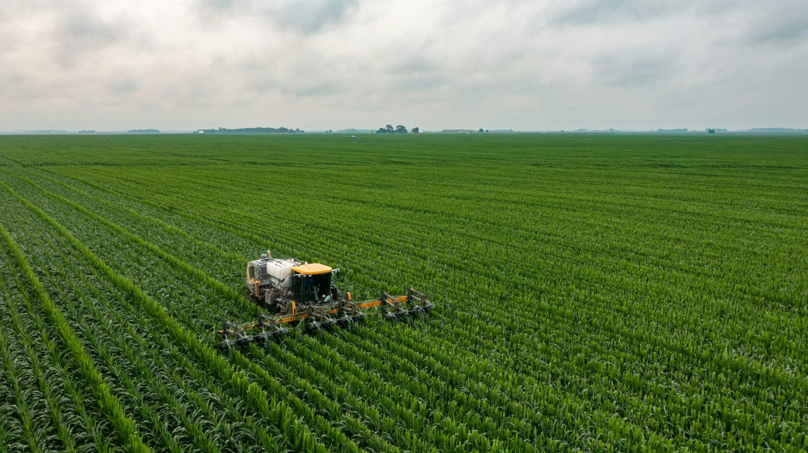

Our Methods
Outlined in this page are the methods our farmers use for sustainable and humane farming practices.
Our Sustainable Approach
We believe in farming that respects both the land and the animals. Here's how we do it:
Sustainable Crop Farming
At GLH, we ensure our farmer follow a set of guidelines to ensure that the produce which we recieve is shigh qualirt and follows certain sustainability practices. The guidelines are as follows:
- Chemicals should only be used when absolutely necessary
- Water use should be managed efficiently
- Farming methods should be optimised to reduce waste
Humane Animal Farming
At GLH, we ensure our farmer follow a set of guidelines to ensure that the produce which we recieve is shigh qualirt and follows certain sustainability practices. The guidelines are as follows:
- Animals must be given high-welfare housing and access to pasture
- Animals must have a natural diet and health management
- Ethical slaughter practices must be used.
Eco-Friendly Practices
To ensure our parterns are contributing to our eco-friendly initiatives, we have implemented the following practices:
- Use of renewable energy sources
- Reduction of waste through composting and recycling
- Use of sustainable packaging